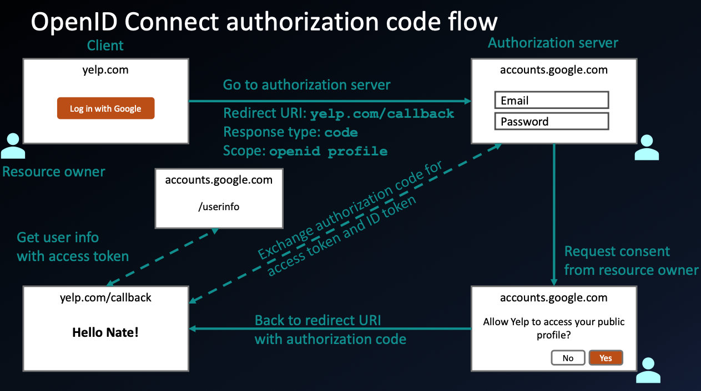

OAuth 2.0 and OpenID Connect (OIDC)
Goated video: https://www.youtube.com/watch?v=996OiexHze0
- OAuth 2.0 for authorization
- OpenID Connect for authentication
Authorization vs. Authentication
Authentication:
- Authentication is the process of verifying the identity of a user, system, or entity. It ensures that the person
or system is who they claim to be.
Authorization:
- Authorization determines what permissions an authenticated user has.
- It is the process of defining what an authenticated user or system is allowed to access or do.
Analogy:
- Authentication: Showing your ID to prove who you are.
- Authorization: Being allowed into a restricted area based on your ID.
| Aspect |
Authentication |
Authorization |
| Purpose |
Verifies identity |
Grants or restricts access |
| When it happens |
Before authorization |
After authentication |
| Mechanisms |
Passwords, biometrics, MFA |
Role-based access control (RBAC), permissions |
| Example |
Logging into a system |
Accessing specific files or features |

- OAuth 2.0 takes advantage of both the back and front channels.
Backchannel and Front Channel
- The front channel is used for user-facing interactions and operates through the browser, while
the back channel is used for secure server-to-server communication.
- The back channel uses POST requests and is more secure than the front channel because:
- All communication is encrypted with HTTPS.
- The client application authenticates itself using a client secret.
- Sensitive data (e.g., authorization code, access token) is never exposed to the browser.
- Authorization codes are short-lived, reducing the risk of misuse.
- In contrast, the front channel is less secure because:
- It relies on the browser to transmit sensitive data (e.g., authorization code) via redirects.
- The browser is a public environment and is more vulnerable to attacks (e.g., man-in-the-middle, phishing, or
malicious extensions).
- The client application has no control over the security of the browser or the network.

- The user interaction part is done using the front channel (browser), but since we can't
fully trust the browser, we use the back channel for the final part of the flow—access token exchange and
resource retrieval.
OAuth 2.0 Authorization Code Flow
Forward Channel (Less Secure)
- The user clicks "Sign in with Google" on the client application.
- The client app redirects the user's browser to Google's authorization server.
- The user logs in and consents to the requested permissions.
- Google redirects the user's browser back to the client app with an authorization code in the URL (redirect
URI or callback).
Risk: The authorization code is exposed to the browser and could be intercepted. However, this
alone is not useful because an authorization code alone cannot be used to access resources. An access
token is required, which can only be obtained by providing both the authorization code and a client
secret.
Back Channel (More Secure)
- The client app takes the authorization code and sends it directly to Google's token endpoint via a
POST request (over HTTPS).
- The POST request is encrypted with HTTPS, and the client app authenticates itself using a
client secret.
- Google responds with an access token, which is securely transmitted over HTTPS and never
exposed to the browser.
POST /token HTTP/1.1
Host: authorization-server.com
Content-Type: application/x-www-form-urlencoded
grant_type=authorization_code
&code=AUTH_CODE
&redirect_uri=https:
&client_id=CLIENT_ID
&client_secret=CLIENT_SECRET
OAuth 2.0 is for Authorization, Not Authentication
- OAuth was never designed for authentication—it was designed for authorization.
- OAuth 2.0 checks the scope of an authenticated user (which is authorization).
- It uses access tokens to grant access to resources. These tokens are short-lived and scoped to
specific permissions (e.g., read-only access to emails).
- OAuth 2.0 does not inherently verify the user’s identity; it only ensures that the application
has permission to access requested resources.
Why OAuth 2.0 Is Not for Authentication
1. Lack of Identity Verification
- OAuth 2.0 does not provide a standard way to verify a user's identity. It only provides an access
token, which does not inherently contain identity information.
2. Misuse for Authentication
- Many developers misuse OAuth 2.0 for authentication by assuming that the presence of an access token implies the
user's identity has been verified. This can lead to security vulnerabilities.
- If an attacker steals an access token, they could impersonate the user without ever verifying their identity.
3. Inconsistency in Authentication Implementation
- OAuth 2.0 does not define how user information (e.g., name, email) should be retrieved, leading to
inconsistencies.
- Different platforms implement their own authentication layers on top of OAuth, which is not the standard
practice.
OpenID Connect (OIDC)
To solve the problem of needing user identity verification, OIDC adds an
authentication layer on top of OAuth 2.0.
OIDC Enhancements
-
ID Tokens (JWTs)
- OIDC introduces ID tokens, which are JSON Web Tokens (JWTs) containing user identity
information (e.g., name, email).
- These tokens are signed and can be verified to ensure the user's identity.
-
Standardized User Info
- OIDC provides a standard way to retrieve user information using the
/userinfo endpoint.
-
Authentication Flow
- OIDC follows OAuth 2.0 flows but adds an ID token alongside the access
token.
OIDC vs. OAuth 2.0
| Step |
OAuth 2.0 |
OpenID Connect (OIDC) |
| Token Issued |
Access token |
Access token + ID token |
| Identity Information |
Not included in the access token |
Included in the ID token |
| User Info Retrieval |
Requires additional API call to /userinfo |
ID token contains user info; /userinfo is optional |
| Use Case |
Accessing Google Drive or Gmail |
Logging into a website using "Sign in with Google" |

Refresh Tokens
Purpose of Refresh Tokens
- Used to obtain a new access token when the current one expires.
- Maintains long-term access to APIs without requiring the user to log in repeatedly.
Key Points
- Refresh tokens don’t expire (but can be revoked).
- Must be stored securely (e.g., database/encrypted storage).
- Issued only once during the first authorization.
- Provided when requesting offline access.
- A single refresh token can be used multiple times to obtain new access tokens.
When Is a Refresh Token Used?
- Google’s access tokens typically expire after 1 hour.
- If an API request fails with a
401 Unauthorized response, the app uses the refresh
token to get a new access token.
Benefits of Refresh Tokens
- Longer login sessions for users.
- More secure than storing long-term access tokens.
- Better user experience (fewer re-logins).
- Required for offline access to user data.
Even when an access token expires, the user remains logged in, but API calls will
fail until a new token is obtained.